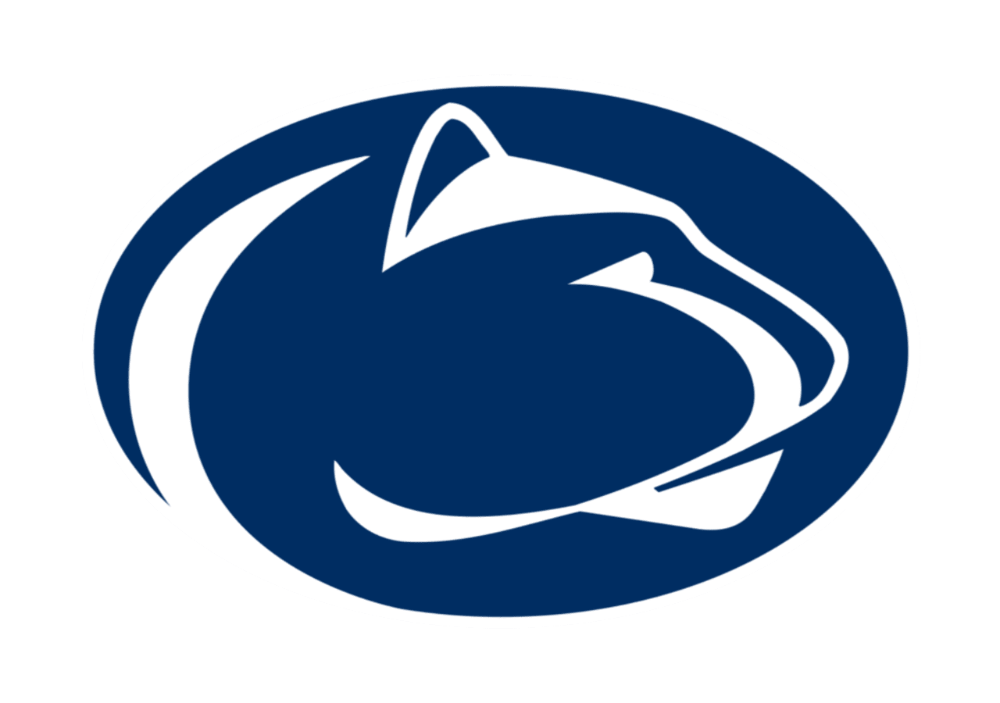

Computer Science, Minor in Mathematics
The Pennsylvania State University • University Park, PA
Relevant Coursework: Software Engineering, Artificial Intelligence,
Machine Learning, Object Oriented Programming
Projects:
Projects:
CMPSC 497.2: Genomic Data Science •
Fall 2025
R, Shell, Python, HPC
Built an RNA-Seq pipeline to analyze gene expression profiles, utilized HPC cluster for large datasets,
and applied PCA/k-means clustering for population analysis.
Northrop Grumman Object Detection Challenge •
Spring 2024
Python, Roboflow, JavaScript
Won 3rd place in a hack week by creating an object detection program using an SAM-2 model
with Python and Roboflow.
CMPSC 497: Cognitive Artificial Intelligence •
Fall 2022
Python, ACT-R, scikit-learn
Developed an AI-powered educational app to enhance kindergarten readiness,
with adaptive gameplay using Python and ACT-R cognitive architecture.
CMPSC 483W: Senior Capstone •
Spring 2025
Python, PostgresSQL, TypeScript
Created a Wi-Fi smart cat feeder system using Raspberry Pi 5 and built a full-stack
web app with SQL integration for meal management.
CMPSC 431W: Database Management •
Spring 2025
Python, SQLite, TypeScript, Flask
Developed an online marketplace prototype connecting SMEs with trusted suppliers,
featuring user management, product listings, category browsing, order tracking, reviews, and search functionality.